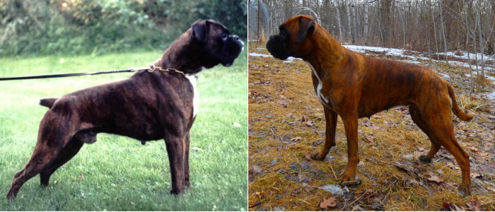
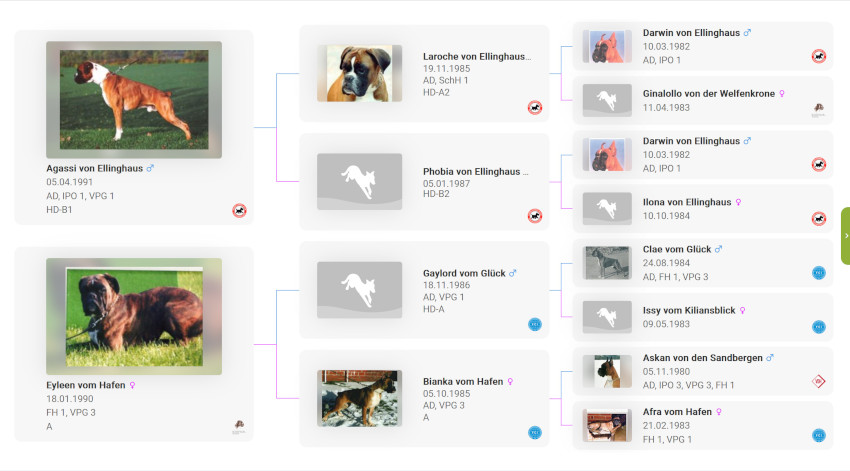

Aurora vom Norden, CGC was bred to Ivo vom Hafen, IPO3, FH2, Police K9 with puppies due the last week of April 2026. Both brindles and fawns are possible. Aurora's father Cliff vom Grand Kevin was a Police K9 so Police K9s on both sides of this pedigree, should produce some excellent working dogs.
- Ivo x Aurora

- Ivo pedigree

- Aurora pedigree


- Cliff x Jibaya litter


On May 8, 2024 Kaya Jibaya von Bachbett gave birth to her first litter of three healthy, gorgeous brindle puppies sired by Cliff vom Grand Kevin, Police K9, IPO2, DPO1, FH1.
Follow us on Facebook.